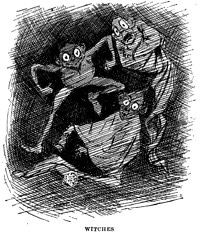

Sources
Bernard DeVoto, Mark Twain's America.
Little Brown and Company. Boston, 1932.
Alan Dundes, Mother Wit From The Laughing Barrel.
Garland Publishing Company, Inc. New York & London,
1981.
Caroline Thomas Harnsberger. Mark Twain's Views of Religion.
The Schori Press. Evanston, 1961.
Joel Chandler Harris
Daddy Jake The Runaway.
The Century Company. New York, 1896.
Nights With Uncle Remus.
Houghton Mifflin Company. Boston & New York, 1883.
Uncle Remus His Songs and Sayings.
D. Appleton & Company. New York, 1898.
Harry Middleton Hyatt. Folk-Lore From Adams County Illinois.
Western Printing and Lithographing Company. Hannibal, 1965.
Mary Alicia Owen. Voodoo Tales as Told Among the Negroes of the Southwest.
G.P. Putnam's Sons. New York & London, 1893.
Newbell Niles Puckett. Folk Beliefs of the Southern Negro.
University of North Carolina Press. Chapel Hill, 1926.
Mark Twain
The Autobiography of Mark Twain. Harper & Row. New York, Evanston, & London, 1959.
The Adventures of Huckleberry Finn. University of California Press. Berkeley & Los Angeles, 1985.